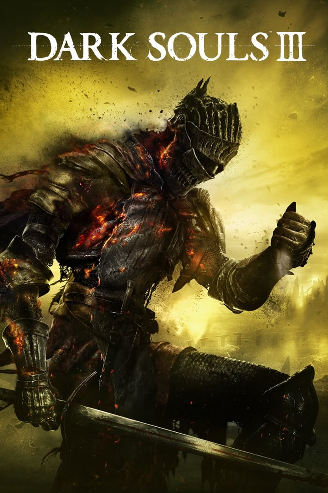

Dark Souls 3 (2016)

Dark Souls III acontece quando a Era do Fogo está chegando novamente ao seu limite. O mundo está entrando em colapso devido às inúmeras tentativas de prolongar a chama, e diferentes épocas e lugares parecem estar se misturando.
O jogador assume o papel de um Unkindled, um guerreiro que tentou se tornar um Senhor das Cinzas, mas falhou em manter a chama. Para impedir o fim do mundo, ele precisa encontrar os Lords of Cinder, antigos guerreiros que já sacrificaram suas vidas para alimentar a Primeira Chama.
Durante a jornada, o jogador chega a Lothric, enfrenta figuras como Abyss Watchers, Yhorm, Aldrich e o próprio príncipe Lothric, descobrindo que muitos deles se recusaram a cumprir novamente seu papel no ciclo.
No final, o jogador chega ao Kiln of the First Flame e enfrenta o Soul of Cinder, uma manifestação daqueles que alimentaram a chama ao longo das eras. Mais uma vez, surge a escolha: prolongar a Era do Fogo, permitir que a chama desapareça ou buscar um destino diferente para o mundo.
Dark Souls III funciona como o encerramento da trilogia, retomando elementos e personagens conceituais dos jogos anteriores e mostrando as consequências de incontáveis ciclos de fogo e escuridão. A grande questão deixada pela série é justamente se vale a pena continuar alimentando um mundo que está constantemente chegando ao seu fim, ou se finalmente é hora de deixar o ciclo terminar.
Classes iniciais
Cavaleiro
Arma inicial: Espada Longa e Escudo de Cavaleiro
Armadura: Conjunto de Cavaleiro
Começa com boa defesa, armadura pesada e atributos equilibrados para combate corpo a corpo.
Mercenário
Arma inicial: Sellsword Twinblades e Escudo de Madeira
Armadura: Conjunto de Sellsword
Tem alta destreza e luta com lâminas duplas, que podem ser empunhadas juntas para ataques rápidos.
Guerreiro
Arma inicial: Machado de Batalha e Escudo Redondo
Armadura: Conjunto do Norte
Começa com força alta e usa o machado para golpes pesados no combate corpo a corpo.
Arauto
Arma inicial: Lança, Escudo de Pipa e Talismã
Armadura: Conjunto de Arauto
Possui o milagre Heal Aid e combina golpes com lança, defesa de escudo e cura própria.
Ladrão
Arma inicial: Faca de Bandido, Escudo Redondo de Ferro e Arco Curto
Armadura: Máscara de Ladrão e peças do conjunto de Desertor, sem luvas
Tem alta destreza e sorte; o arco curto permite atrair inimigos, enquanto a adaga favorece ataques rápidos.
Assassino
Arma inicial: Estoc, Escudo-Alvo e Cajado de Feiticeiro
Armadura: Conjunto de Assassino
Especializado em destreza e estocadas; começa com o feitiço Spook, que abafa passos e reduz dano de quedas.
Feiticeiro
Arma inicial: Quebra-cotas, Escudo de Couro e Cajado de Feiticeiro
Armadura: Conjunto de Feiticeiro
Começa com inteligência alta e os feitiços Soul Arrow e Heavy Soul Arrow para atacar à distância.
Piromante
Arma inicial: Machado de Mão, Escudo Redondo de Caduceu e Chama de Piromancia
Armadura: Conjunto de Piromante
Combina inteligência e fé, começa com a piromancia Fireball e pode lutar de perto com o machado.
Clérigo
Arma inicial: Maça, Sino Sagrado de Clérigo e Escudo de Madeira Azul
Armadura: Conjunto de Clérigo
Tem fé alta e começa com os milagres Heal e Force; não inicia com milagres ofensivos.
Desprovido
Arma inicial: Clava e Escudo de Tábuas
Armadura: Apenas tanga; sem elmo, peitoral ou luvas
Começa no nível 1 com todos os atributos em 10, oferecendo uma base uniforme para montar a personagem.
Chefes mais dificeis do Dark Souls 3
| Chefe | Local | Tipo |
|---|---|---|
| Darkeater Midir | The Ringed City | Dragão |
| Sister Friede | Ashes of Ariandel | Humanoide / Freira |
| Slave Knight Gael | Filianore's Rest | Humanoide / Cavaleiro |
| Nameless King | Archdragon Peak | Humanoide / Guerreiro |